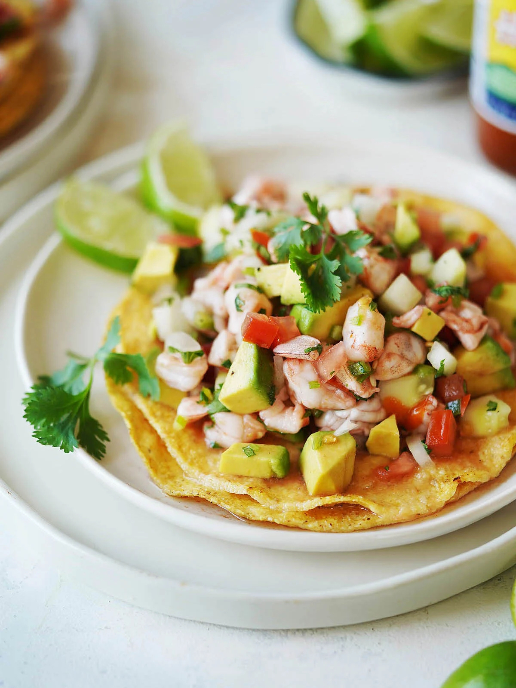
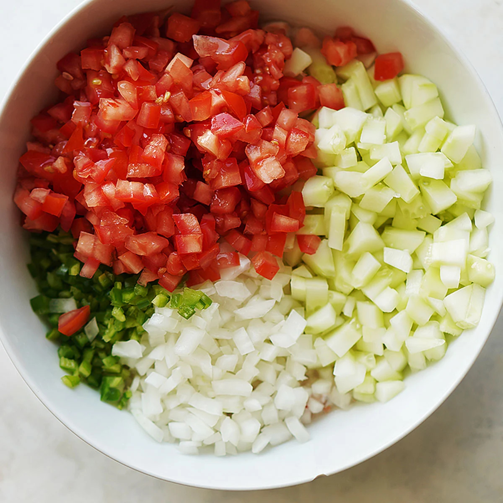
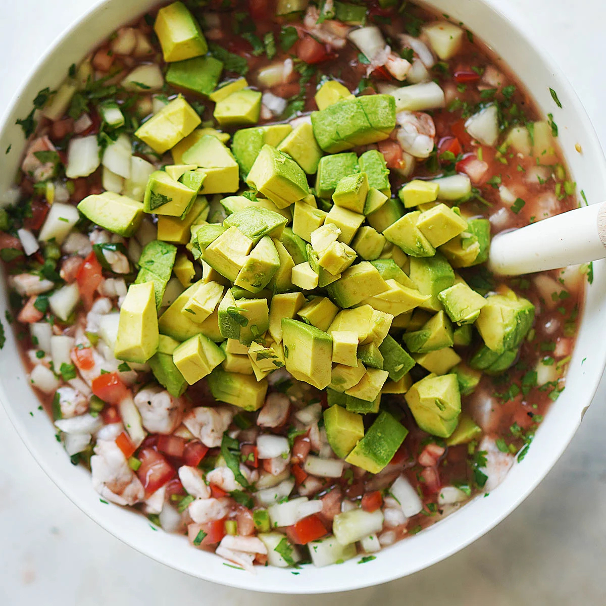

Shrimp Ceviche

Description
Shrimp Ceviche is one of the ultimate healthy Mexican dishes.
Fresh seafood + lots of “good for you” veggies. It can't get better
than this! Serve it as an appetizer or as a light meal accompanied with tostadas,
saltines or tortilla chips.
Ingredients
Main ingredient
- raw shrimp (peeled and deveined)
Veggies
- cucumbers
- tomatoes
- onions
- jalapeños
- limes
- fresh cilantro
- avocados
The "juice"
- clamato or V8 tomato juice
- salt & pepper to taste
- hot sauce
Steps
- Cut shrimp into very small pieces and place in a plastic or glass container
(don’t use metal as the acid from the lime does not go well with this
material)
- Add enough lime juice making sure all of the shrimp is covered with it. I
recommend you use a citrus squeezer for easiness! An “esprimidor”
(manual lemon/lime juicer) it’s one of those kitchen gadgets I recommend
to every Mexican Food lover!
- Cover the shrimp’s container with plastic wrap and refrigerate for at least
three hours but preferably overnight.
- While the shrimp is marinating, start cutting the veggies and place in
refrigerator.
- When the shrimp is cooked through (it will be pink), add the vegetables
(except avocado), clamato juice, salt & pepper and mix well.
-
Lastly add the avocado and fold gently into the mix.


Source